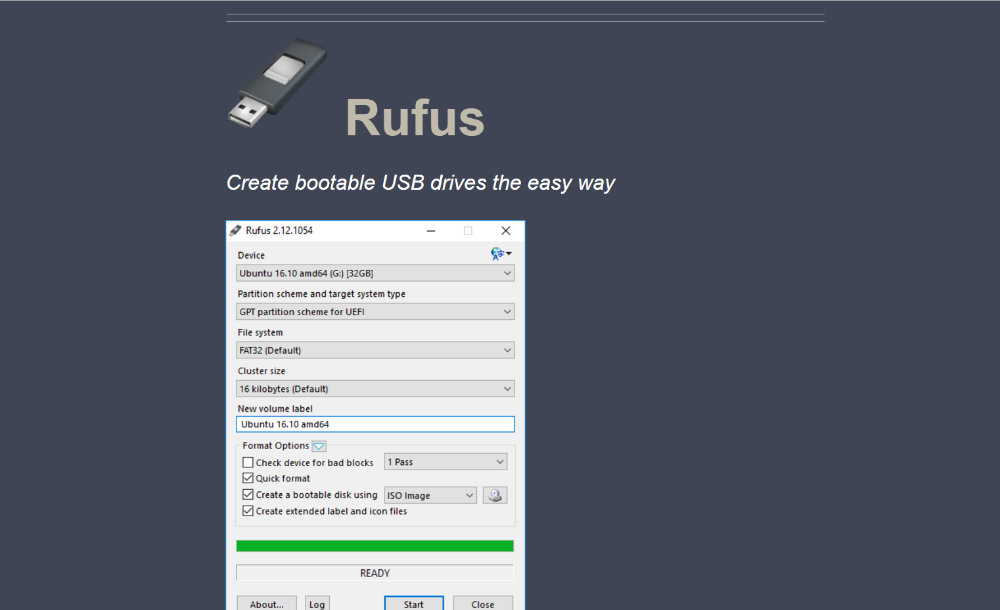
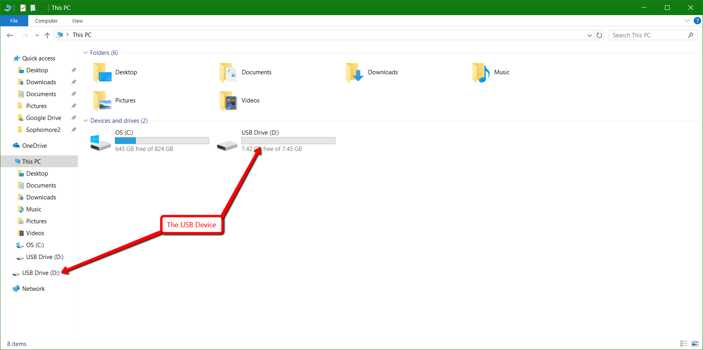
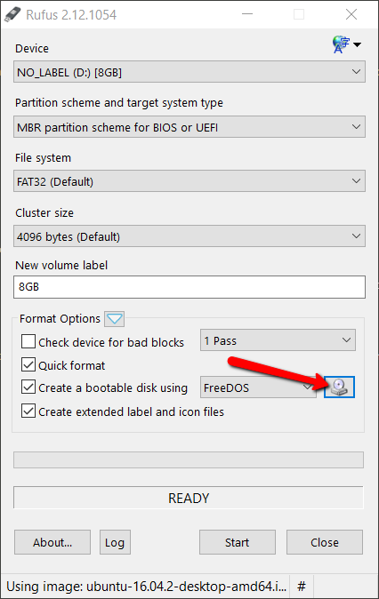
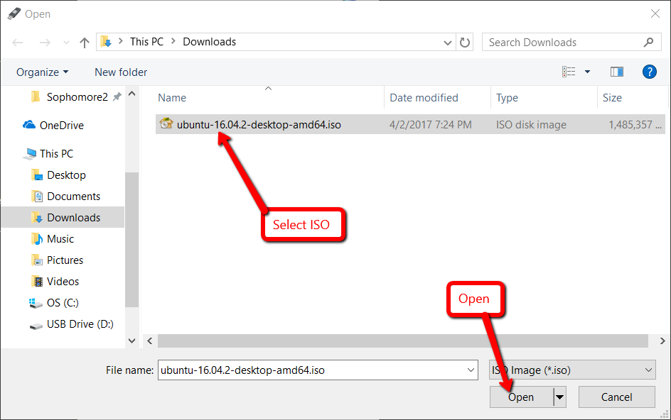
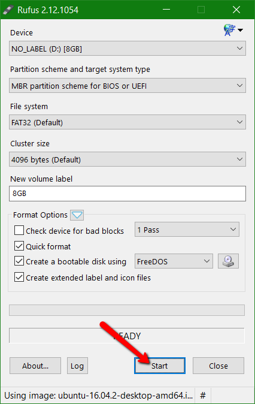
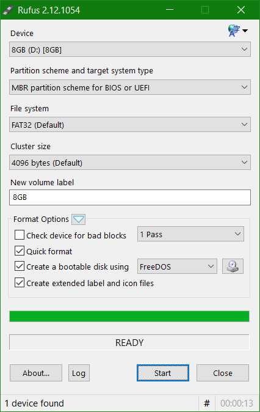
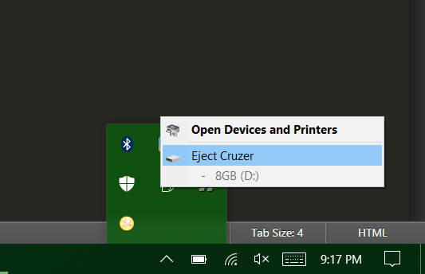

Completion: 0%
A simple guide for creating a bootable USB drive on Windows.
Download and open Rufus from this link. Follow the instructions on the page.
Note: There are other ways to create a bootable USB device in Windows, but this tutorial covers Rufus, a helpful program that makes the creation of bootable USB devices much easier. Another option is to use diskpart, which is a command-line utility built in to Windows.
Insert Your USB Flash Drive into your computer.
You can use Windows Explorer to check to verify that the flash drive is connected, as shown in the image below. The flash drive should show up as a drive letter, which is a capital letter followed by a colon. For example, R: is a valid flash drive location.
Open Rufus and select your flash drive in the Device dropdown menu.
Caution: Be sure that the device you select is your flash drive, not some other disk. The following process will wipe the entire disk, so be sure any critical information is backed up.
Click on the CD icon next to FreeDOS dropdown list.
When the dialog box comes up, find and select the ISO for the operating system that you downloaded and then select Open.
Press Start to start creating the bootable USB drive with Rufus.
A confirmation box will pop up, letting you know that your device will be wiped. Select Okay if you are sure no critical information is on the device.
Caution: Be sure all critical data is backed up on the device, as this process will wipe the flash drive.
When the process has finished, it should look like it does in the image below.
Next, verify that the flash drive is removed safely.
Safely remove the device as shown in the image below.
The last step is to boot your computer using the flash drive you just created. This process will vary from computer to computer, and will not be covered in this tutorial. Most PC's will have you repeatedly press a function key (F1) when the computer is booting up to enter a Boot Menu. Here is a list of helpful links to get started with this: